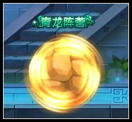

八戒第二心法解析：
一、飞旋锤
解析：这个技能最好配合推山移石来使用可以高效率的命中
二、地滚球
解析：这个技能是八戒的走位技能，也是输出技能之一

三、破山击
解析：这个技能可以眩晕BOSS是个不错的限制技能，配合好可以连BOSS
四、推山移石
解析：这是八戒第二心法醉亮点的技能，可以把BOSS圈在一起攻击方便BOSS不易逃跑
五、憾山震地
解析：八戒第二心法输出最高的技能，超高伤害但是不好掌握技巧
延伸：憾山震地虽然可以打断BOSS的技能但是也会打乱BOSS的技能所以一定配合破山击输出
第二心法主要连击技巧：
推山移石（束缚BOSS移动）--破山击（眩晕BOSS）--憾山震地（最高输出）
一般这样循环两次BOSS就差不多无敌了。
一、对付一些地面BOSS主要就是上面介绍的连击：
还是黄眉大王为例子：
首先我们可以进场直接用一个破山击眩晕BOSS的同时用出1-2个憾山震地，之后赶紧使用推山移石限制黄眉大王的移动，之后走到一定的距离用出飞旋锤攻击土墙中的BOSS，黄眉大王的法宝也会被卡墙角里，之后等黄眉大王离人物一个憾山震地距离使用憾山震地反复就可以了。
二、对付天空BOSS
对付天空BOSS还是比较吃力的，我们可以飞旋锤先试探BOSS之后使用地滚球攻击，之后推山移石束缚他使用破山击来击晕BOSS之后，跳起来使用憾山震地或者直接使用憾山震地，总之第二心法主要是在眩晕的基础上进行攻击！